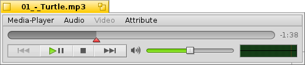
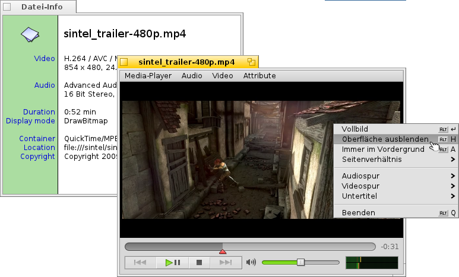
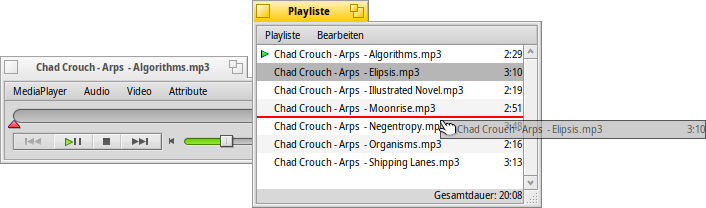
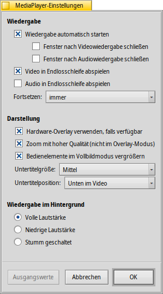

Deutsch
Deutsch Català
Català English
English Español
Español Français
Français Italiano
Italiano Magyar
Magyar Polski
Polski Português
Português Português (Brazil)
Português (Brazil) Română
Română Slovenčina
Slovenčina Suomi
Suomi Svenska
Svenska 中文 ［中文］
中文 ［中文］ Русский
Русский Українська
Українська 日本語
日本語 Media-Player
Media-Player
| Deskbar: | ||
| Ort: | /boot/system/apps/MediaPlayer | |
| Einstellungen: | ~/config/settings/MediaPlayer |
Media-Player ist die Standardanwendung zum Abspielen aller Audio- und Videodateien. Da es auf ffmpeg basiert, werden eine Unmenge an verbreiteten Formaten unterstützt. Die einfache Oberfläche enthält alle Bedienelemente, die man so erwartet:
Mit dem Zeiger auf dem Fortschrittsbalken lässt sich schnell zur gewünschten Position springen. Hält man den Mauszeiger über den Balken, wird die aktuelle und verbleibende Zeit für diesen Clip eingeblendet. Klicke auf die Zeitanzeige rechts davon, lässt sie zwischen Gesamtzeit, momentaner Zeit und Restzeit wechseln.
Darunter befinden sich die üblichen Tasten um zum vorigen Clip zu springen, Wiedergabe/Pause, Stopp und um zum nächsten Clip zu springen. Daneben befindet sich ein Lautstärkeregler (das Lautsprechersymbol schaltet stumm) und eine Pegelanzeige.
Wiedergabe von Audio- und Videodateien
Weil es keine Features gibt, die nur auf Audio zutreffen, geht's gleich weiter mit den allgemeinen bzw. Videofunktionen.
Für alle Medien zeigt (ALT I) Informationen wie Spieldauer oder Details zu Audio/Video Track und den verwendeten Codecs der aktuellen Datei.
Die meisten der oft benutzten Befehle aus den Menüs stehen auch in einem Kontextmenü mittels Rechtsklick auf die Videofläche zur Verfügung. Praktisch vor allem im Vollbildmodus.
Unter befinden sich Befehle, um das Fenster auf verschiedene Größen zu zoomen oder das Seitenverhältnis auf diverse Standardwerte erzwingen zu können. Für korrekt erstellte Dateien fährt man mit am besten.
Media-Player kann Untertitel im SRT Format darstellen. Damit sie unter auftauchen, muss ihr Dateiname identisch zu der Videodatei sein, allerdings mit einem angehängten Sprachkürzel und der Endung ".srt" statt der Videoformat-Endung. Also:
DerFilm.avi DerFilm.Deutsch.srt DerFilm.English.srt DerFilm.Français.srt
Mehrere Audiotracks, meist für unterschiedliche Sprachen innerhalb einer Videodatei benutzt, finden sich im Menü. bietet das entsprechend falls mehrere Videostreams vorhanden sind.
Mittels mode (ALT RETURN oder F oder einen Doppel-Linksklick) lässt sich in den Vollbildmodus wechseln, (ALT H oder ein Doppel-Rechtsklick) blendet Media-Players Fensterrahmen und Bedienelemente aus, und durch (ALT A) schwebt der Media-Player immer über allen anderen Fenstern.
Playlisten
(ALT P) öffnet ein Fenster mit allen Dateien die zur Wiedergabe anstehen. Ein Doppelklick auf einen Eintrag startet die Wiedergabe.
Um weitere Dateien anzufügen, lässt man sie einfach über der Liste fallen und ändert ihre Position per Drag & Drop. Aus dem Menü lässt sich eine erzeugen oder einzelne Einträge aus der Liste (ENTF). Die eigentliche Datei lässt sich auch direkt von hier (ALT T).
Natürlich lässt sich eine Playliste auch und später wieder . Oder man startet die Wiedergabe gleich mit einem Doppelklick auf eine Playlist-Datei.
Einstellungen
Am Verhalten des Media-Players lässt sich mit ein paar Einstellungen drehen:
Die ersten Optionen unter sind ziemlich selbstsprechend. Wiedergabe automatisch starten, Fenster nach vollendetem Abspielen schließen, oder Clips in Endlosschleife spielen.
Es folgen Einstellungen zur .
Man kann , was die CPU-Last senkt, aber nur für ein einziges Fenster möglich ist und auch erstmal vom Grafikkartentreiber unterstützt werden muss.
Es lässt sich ein einschalten (allerdings nicht im Overlay-Modus), was durch ein sehr schnelles Filtern Stufenbildung vor allem bei vergrößerter Darstellung und im Vollbildmodus mindert.
Durch werden die Bedienelemente etwas größer dargestellt, vielleicht sitzt man bei bildfüllendem Video ja etwas weiter weg vom Bildschirm.
Dann folgen Optionen zur und . Sie können eingeblendet werden, wodurch sie immer im Bild sind. Oder , was es erlaubt die Fensterhöhe so zu ändern, dass die Untertitel immer unten im schwarzen Balken erscheinen.
Die letzte Option bestimmen in welcher Lautstärke Clips abgespielt werden, deren Fenster gerade nicht im Vordergrund sind. Entweder alle spielen immer , mit weniger nervende oder ganz .
Tastenkürzel
Media-Player kennt einige nützliche Tastenkürzel um die Wiedergabe zu steuern ohne die Maus zu benutzen.
| Y | Voriger Track | |
| X | Wiedergabe | |
| C | Pause | |
| V | Stopp | |
| B | Nächster Track |
Diese Tasten sind den Funktionen der entsprechenden Bedienknöpfe zugeordnet. Es sind immer die Tasten unten rechts auf der Tastatur, das bedeutet sie sind unabhängig vom verwendeten Tastaturlayout. Die genannten Tasten entsprechen einer deutschen Standard-Tastatur.
| ← / → | Rückwärts/Vorwärts spulen | |
| SHIFT ← / → | 10 Sekunden rückwärts/vorwärts springen | |
| ALT ← / → | 30 Sekunden rückwärts/vorwärts springen | |
| ↓ / ↑ | Leiser/Lauter | |
| ALT ↓ / ↑ | Nächster/Voriger Track | |
| LEERTASTE | Wiedergabe/Pause umschalten | |
| ALT RETURN | Vollbild-Modus umschalten (auch durch Doppelklick ins Bild oder F oder TAB Taste) | |
| ALT SHIFT 0 / 1 / 2 / 3 | Ändert das Seitenverhältnis zu (wie das Video kodiert wurde), (bildet die Pixel 1:1 auf dem Bildschirm ab), , |